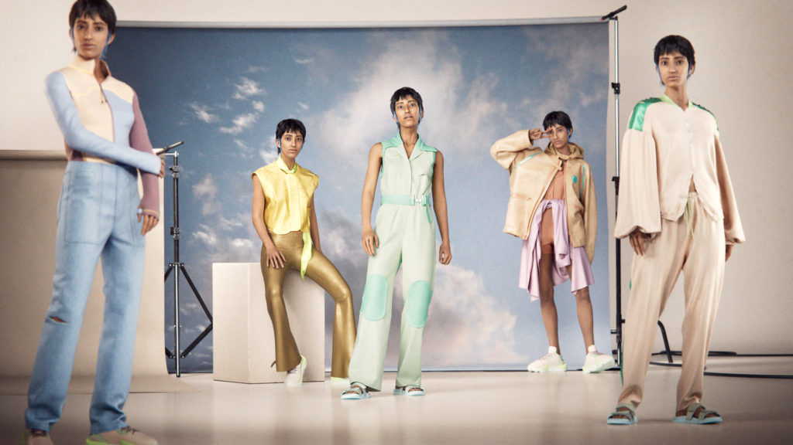

Digital Fashion is the creation, recreation, production, promotion and consumption of clothing built using computer technologies and 3D software.
I'm personally interested in what makes digital fashion a popular digital practice and how it is growing in popularity.
Key Definitions
"the application of digital technology in its many forms for the production and consumption of fashion apparel and services." (Flynn, 2020)
"Digital fashion is clothing that is not physically manufactured, including game skins, avatar clothing and Non-fungible tokens." (Doyle, 2022)
"Digital fashion is a multidisciplinary field, and the technological innovations that are making it possible can be clustered under following four themes: (1) digital design and e-prototyping, (2) digital business and promotion, (3) digital human and metaverse, and (4) phygital apparel and smart wearable technology." (Muhammed Sayem et al., 2023)
Three areas of technological development which have been most impactful include:
The digitisation of products
The digitisation of promotional methods
The applications of digital fashion now & the future
(IL Task 2) Initial Research & Aims
What is Digital Fashion?
concept which has its roots in video game culture and dates back to the late 1990s and early 2000s.
widely introuduced by purchasing ‘skins’ for video games or downloading designer clothing for avatars (Gucci x Roblox 2021).
the rise of virtual reality, augmented reality, and 3D printing over the last decade = digital only clothing collections.
the rise of fashion and beauty influencer culture = trying on digital clothing online
digital fashion has become more popular due to the coronavirus pandemic: social distancing and lockdown restrictions.
digital fashion offers a susatinable solution to fast fashion and limit environmental impacts
What Am I Aiming to Convey?
Digital Fashion is a practice that could easily be further applied to our current online practices.
Digital Fashion encourages sustainability and accessibility.
Digital Fashion is a new and increasingly relevant art medium.
Digital Fashion creates economic development using digital currency
(IL Task 2) Applications of Digital Fashion
Common Applications
Video game skins - clothing lines for gaming platforms
NFTs - cannot easily copy or counterfeit creations and steal intellectual property (issue in fashion and art). A fashion NFT can be digital fashion but digital fashion is not always an NFT. This is because digital fashion does not always need to be minted and stored on the blockchain.
Brand promotion - advertising campaigns (covid case study)
Fashion shows - integrating digital fashion in physical shows
Future of Applications
Ecommerce - fully virtual brands and virtual models online
More demand for sustainability (not wasting materials for promotion) AND accessibility (covid case study)
Increased user interactivity - more virtual clothing and influencers on social media

H&M creates an all digital collection
Shared by Malin Björne, H&M Foundation at hmgroup.com.